Left: v18 mockup. Right: real seed replay. Timings are requested capture delays, with browser screenshot latency. Prose and outcomes differ intentionally. Month-end flip and season-change frames await Part D; full reduced-motion acceptance awaits Part E.
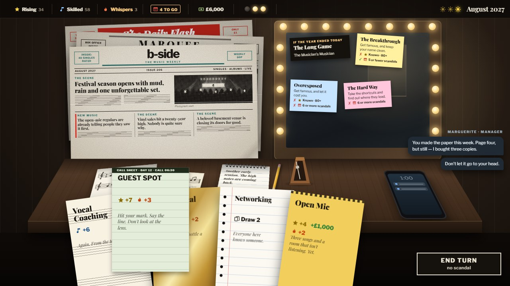
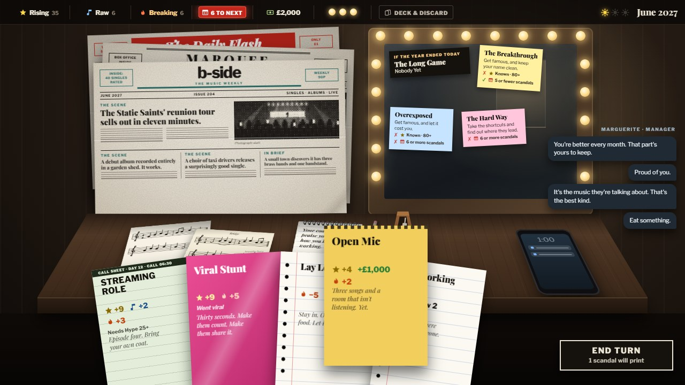
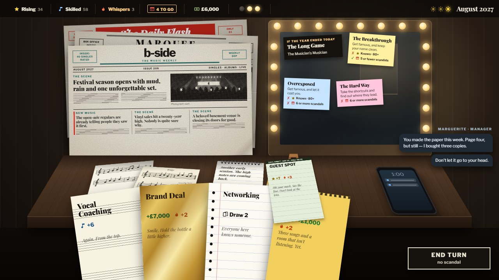
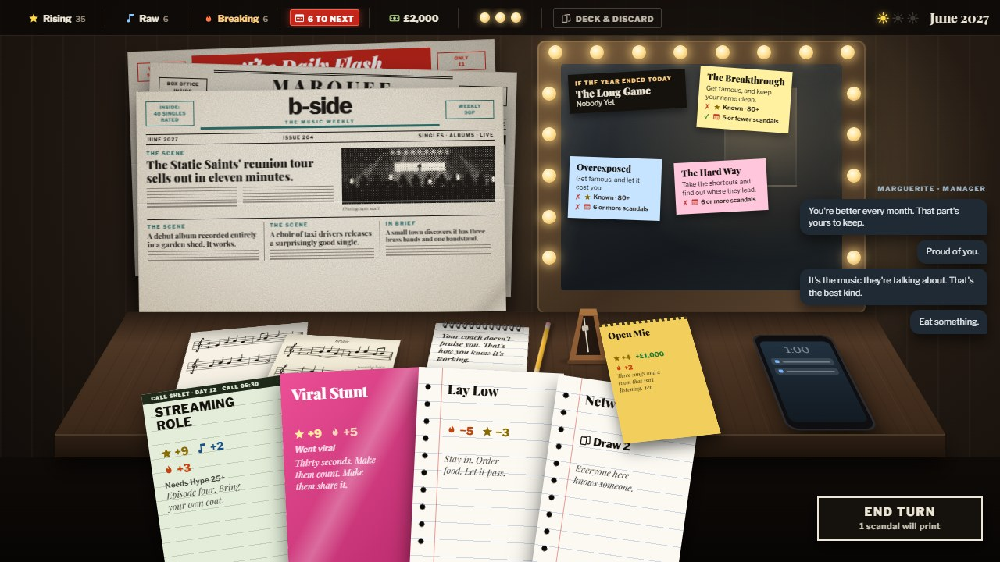
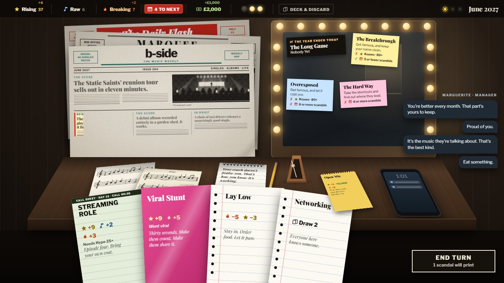
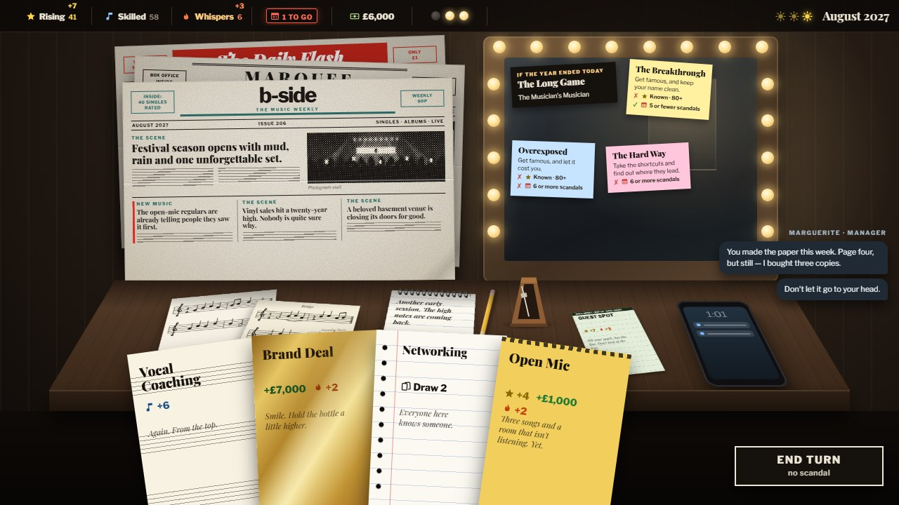
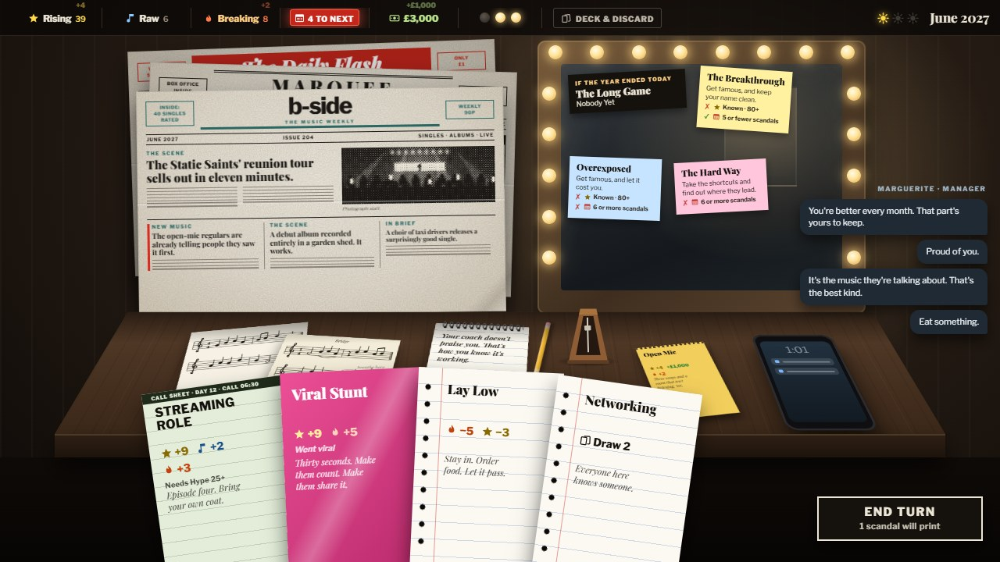
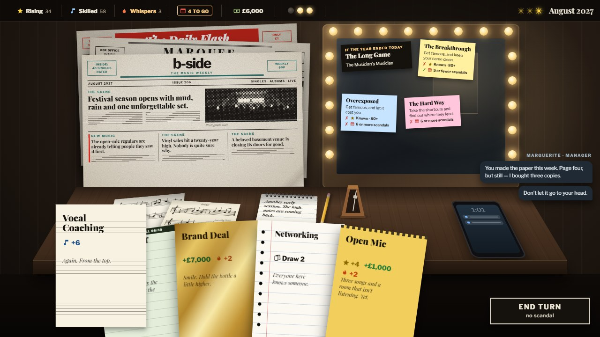
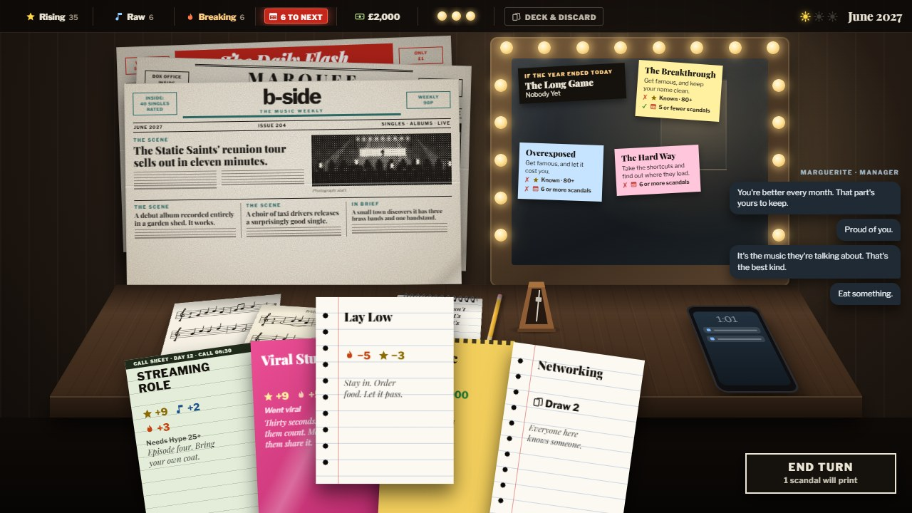
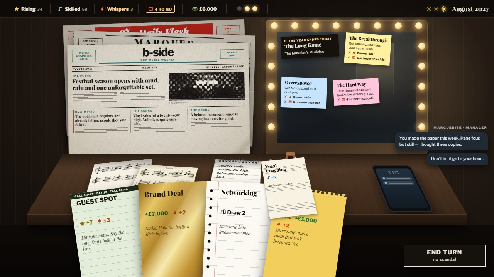
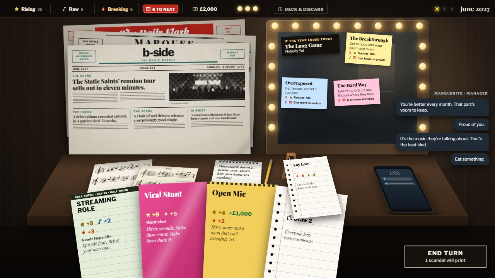
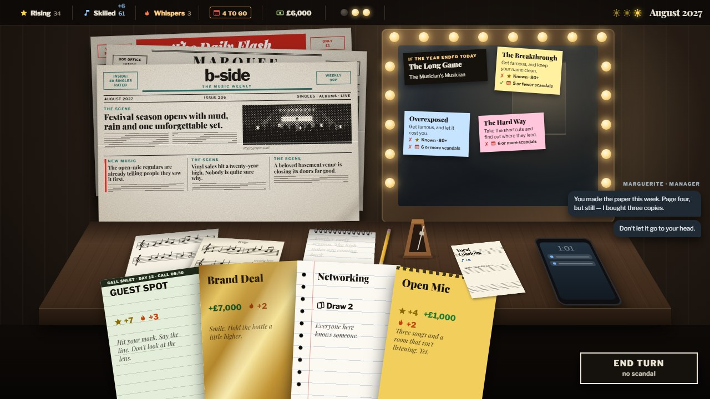
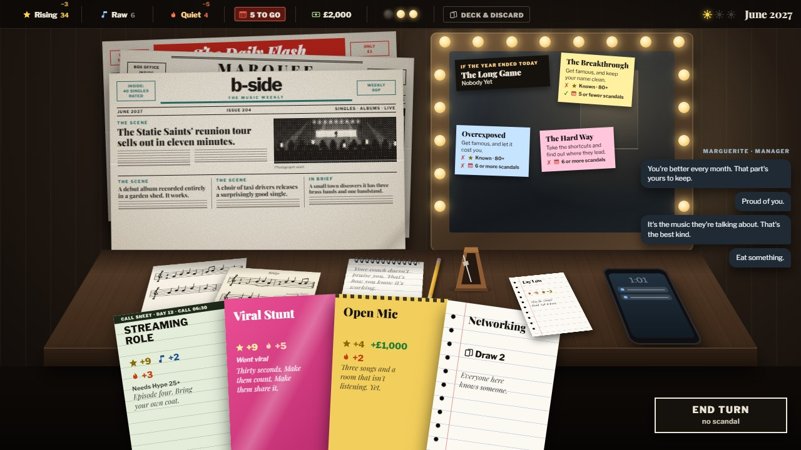
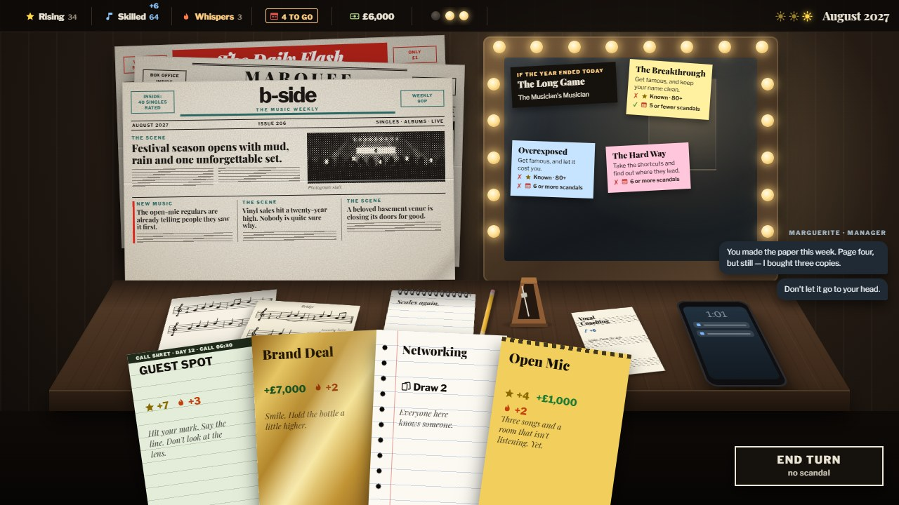